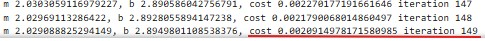

The risks and benefits of the use of AI writers at different level, from administrative work to creative writing
The article by Matthew Hutson (2021) looks at the capabilities, applications and implications of advanced
large language models (LLMs). While celebrating the progress in AI, it also highlights the potential risks
associated with these models. Hutson discusses the abilities of models like GPT, their practical
applications and ethical concerns such as misinformation, bias, plagiarism, and job displacement.
In the article Hutson (2021), two researchers have claimed that GPT-3 surpasses GPT-2 in generating
radicalizing texts, which reflects the concern about the advancements in the capabilities of large
language models.
The use of AI writers offers major benefits but also carries notable risks. In administrative work,
AI saves employees time by assisting with tasks such as summarizing reports and drafting emails,
allowing the employees to focus on higher-level responsibilities. However, over-reliance on AI can lead to
a lack of critical thinking and skill erosion among workers. Using AI tools for administrative tasks
increases the risk of exposing sensitive data to external systems, raising privacy and security concerns.
In creative writing, AI can suggest plotlines and character descriptions, which helps writers overcome
creative blocks (Costello, 2024). It also lowers the barrier for amateur writers to start projects, making
creative endeavours more inclusive and accessible.
Relying on AI writers can lead to reduced mental engagement and causes the brain to become less active and
not function as effectively is it once did. The article “From tools to threats: a reflection on the impact
of artificial intelligence chatbots on cognitive health” explores potential risks of artificial
intelligence chatbot induced cognitive atrophy (AICICA) (Dergaa et al., 2024). It raises concerns that
overreliance on AICs could lead to a decline in critical cognitive skills like critical thinking, analysis,
and creativity, emphasizing the role of AICs’ personalized and interactive nature in contributing to
cognitive atrophy (CA) (Dergaa et al., 2024).
References
Costello, D. (2024) How ai tools enhance creative writing, ServiceScape. Available from:
https://www.servicescape.com/blog/how-ai-tools-enhance-creative-writing#:~:text=Moreover%2C%20AI%20can%20assist%20in,that%20ensures%20coherence%20and%20flow.
[Accessed: 20 January 2025].
Dergaa, I., Saad HB., Genn, JM., Amamou, B., Aissa MB., Guelmami N., Fekih-Romdhane, F., Chamari, K. (2024) From tools to
threats: A reflection on the impact of artificial-intelligence chatbots on Cognitive Health, Frontiers in Psychology, 15.
doi:10.3389/fpsyg.2024.1259845.
Hutson, M. (2021) Robo-writers: the rise and risks of language-generating AI, Nature 591: 22–25.
DOI: https://doi.org/10.1038/D41586-021-00530-0.
Gradient Cost Function
The article by (Mayo, 2017), explains how neural networks learn by adjusting the weights of neuron
connections to minimize the error between actual and predicted outputs. The process involves two key
concepts: backpropagation and gradient descent.
Backpropagation: A method used to train an artificial network by repeatedly adjusting the weights of the
connections in a network through each iteration (epoch). Its aim is to reduce the difference between the
models predicted output and actual output by adjusting the weights and biases in the network, often
utilizing optimizing algorithms like gradient descent or stochastic gradient descent (GeeksforGeeks, 2024).
Gradient descent: An optimization algorithm used to update the weights in order to minimize the
cost function that measures the difference between actual and predicted outputs.
Gradient descent in combination with backpropagation is used to train neural networks.
Backpropagation uses the chain rule to calculate loss with respect to each parameter across all layers.
These gradients are then utilized by gradient descent to iteratively update the parameters, adjusting them
layer by layer to minimize the loss function.
References
GeeksforGeeks (2024) Backpropagation in neural network, GeeksforGeeks.
Available from: https://www.geeksforgeeks.org/backpropagation-in-neural-network/ [Accessed: 08 January 2025].
Moyo, M. (2017) Neural network foundations, explained: Updating weights with gradient descent & backpropagation,
KDnuggets. Available from: https://www.kdnuggets.com/2017/10/neural-network-foundations-explained-gradient-descent.html [Accessed: 08 January 2025].
Activity
In the Gradient cost function activity we were given an activity to run a notebook and change the learning rate and iteration numbers.
The goal is reach a low cost with least amount of iterations.
Run 1: Learning rate : 0.08, iterations :100.
Minimum cost: 0.004
Run 2: Learning rate : 0.09, iterations :150.
Minimum cost: 1.04 at iteration: 133, cost at iteration 149: 5.16
Run 3: Learning rate : 0.06, iterations :150.
Minimum cost: 0.002
Learning rate 0.08 with 100 iterations provides the optimal results with least iterations.
By decreasing the learning rate to 0.06 the minimum cost improved by just 0.02 but with an increase of
50 iterations. Increasing the learning rate and iterations (step 2), causes the weigh updates to become
too aggressive causing the model to overshoot the optimal solution.
